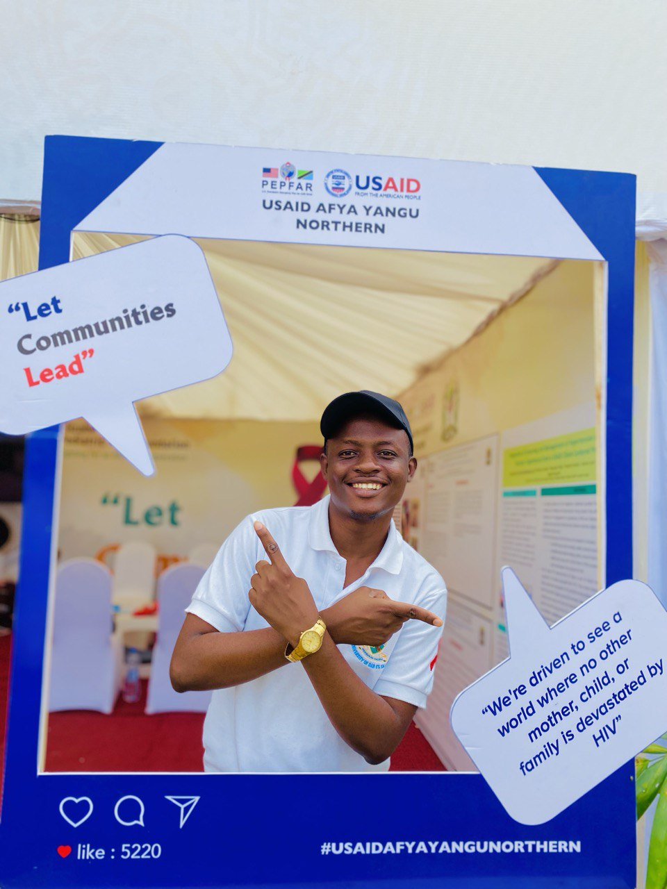

All your digital needs...covered.

Leadership Skills
With a natural inclination towards leadership, honed through my experience as Minister of Health in the University of Dar es Salaam's Student Government, I possess a unique blend of interpersonal skills, strategic thinking, and a commitment to fostering growth and collaboration within teams. My tenure in this role equipped me with invaluable insights into managing diverse stakeholders, implementing effective policies, and addressing pressing health-related issues within the student body. Through proactive initiatives and inclusive decision-making, I successfully promoted health awareness and improved access to essential services, demonstrating my ability to lead with empathy, integrity, and vision. This experience solidified my dedication to driving positive change and empowering others to reach their full potential, making me a versatile and dynamic leader poised to excel in any environment.
Web Development
My proficiency in web development stems from rigorous training at the PLP Academy, where I honed my skills in various programming languages and frameworks. Through hands-on experience and mentorship, I gained expertise in HTML, CSS, JavaScript, and other essential tools of the trade. The comprehensive curriculum provided by PLP Academy equipped me with the knowledge and practical know-how to design and develop responsive and user-friendly websites. From crafting elegant layouts to implementing dynamic functionalities, I've cultivated a keen eye for detail and a passion for innovation. My training at PLP Academy not only sharpened my technical abilities but also instilled in me a problem-solving mindset and a commitment to staying abreast of industry trends. With this solid foundation, I am well-equipped to tackle diverse web development projects with confidence and precision.

Content creativity
My skills in content creativity are exemplified by my work, particularly through platforms like Masterclass, which I have showcased on Instagram (@masterclass_005). With a keen eye for storytelling and a flair for engaging audiences, I excel in crafting compelling narratives that captivate and inspire. Through the Masterclass program, I've demonstrated my ability to curate dynamic and informative content that resonates with viewers, offering valuable insights and experiences. From concept ideation to execution, I leverage my creativity to produce content that not only entertains but also educates and enriches the audience's lives. My work with Masterclass underscores my commitment to pushing the boundaries of content creation and delivering impactful stories that leave a lasting impression.